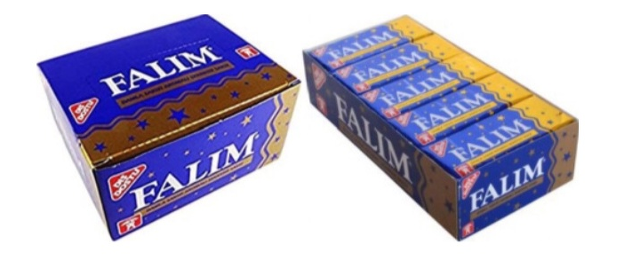
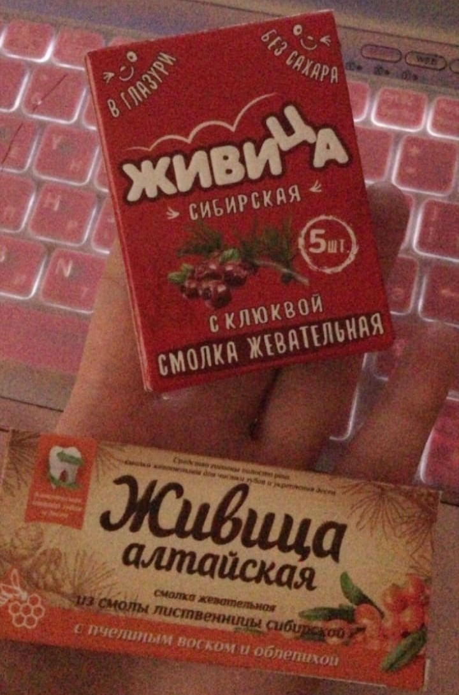

Сегодняшний пост будет особенно полезен нашим мужчинам, а также некоторым девушкам. Поговорим о том, как доразвить себе красивую, фактурную нижнюю челюсть. В этом может помочь так называемый чьюинг (chewing) — жевание твёрдой жвачки.
Мьюинг, засчёт воздействия силы давления языка изнутри на нёбные швы (и далее на все 28 костей нашего черепа, которые соединяются между собой подвижными швами), выдвигает и расширяет максиллы, создавая поддержку глазам, формируя высокие скулы - «треугольник красоты», горизонтально развитое лицо 3D.
Чьюинг же в большей степени воздействует на мышечную ткань, развивая жевательные мышцы и заменяя необходимое для развития ротового аппарата жевание жёсткой пищи, которую ели наши предки. То есть, мьюинг в любом случае первостепенен. Такое костное реструктурирование позволяет приблизиться к эталоной форме лица, у женщин — более женственной, у мужчин — мужественной.
Но многие мужчины хотели бы пойти дальше и обрести более брутальные черты, добавив объём в области челюсти. Этого и можно достичь чьюингом. По факту, жевание жёсткой жвачки с правильным положением языка — это самый продвинутый уровень мьюинга, прокачка жевательных мышц.
Дисфункция височно-нижнечелюстных суставов. Она может быть недиагностированной и развиваться с самого детства вследствие краниальных деформаций, полученных в результате родовой травмы или более поздних изменений, поэтому в любом случае начинать чьюинг следует очень постепенно.
Симптомы вегето-сосудистой дистонии — головные боли, мигрени, головокружения, перепады давления, мозговой туман, хроническая усталость, и т.д. Дело в том, что эти симптомы могут быть проявлением недиагностированной дисфункции ВНЧС, и в случае активного чьюинга вы можете повредить сустав, диск и привести к их смещению.
Стресс, бруксизм, эмоциональная нестабильность. Жевательные мышцы у многих людей «забиты» в результате постоянного подавления эмоциональных проблем, и, если не расслаблять эти мышцы, чьюинг может привести к ещё большим проблемам.
Непривычная нагрузка на жевательные мышцы (как на любые другие мышцы тела) может приводить к напряжению и болям в этой области. Выход — дозированная постепенно увеличивающаяся нагрузка с внимательным отношением к своему состоянию. В случае проявления любых беспокоящих проблем, хруста или болей в области височно-нижнечелюстных суставов жевание жвачки необходимо прекратить до полного восстановления и обследовать сустав у специалиста.
Техника жевания:
Лучший вариант который советуют на англоязычный форумах - это мастичная жвачка Falim:
Это очень твёрдая жвачка без вкуса, Турецкого производства, которая в 1996 году была признана Исследовательским Институтом Цюриха "дружественной для зубов".
А из доступных аналогов на прилавках можно встретить:
Вообще подойдёт любая жёсткая и без сахара.